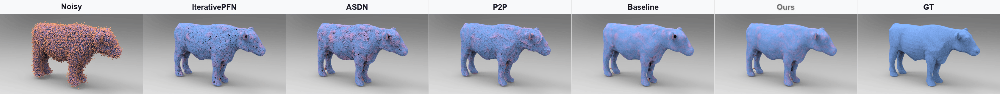
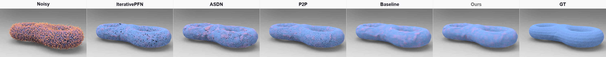
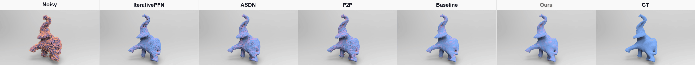

01Training
Clean-Prior Distillation HGCPD
A gradient-frozen teacher, updated by an exponential moving average, transfers clean-code assignments and multi-scale structural cues to a masked noisy student.
Point cloud denoising
Removing measurement noise while preserving the geometric details that define a shape.
PUNet · 50,000 points · 2.5% Gaussian noise
CD and P2M are reported in 10−4 units. GPD: 0.881 CD / 0.604 P2M.
Qualitative comparison
Four rotating examples compare the noisy input, five denoising methods, and ground truth.
All seven methods are shown together in each synchronized animation.




The problem and approach
Point cloud denoising must remove measurement noise without erasing fine geometric structure. Structural priors extracted from noisy features may mix these signals, while uniform feature fusion and coordinate updates may move points that are already reliable. We address the two problems separately.
Hierarchical Geometry-Aware Clean-Prior Distillation (HGCPD) transfers clean structural knowledge from a gradient-frozen teacher, updated by an exponential moving average, to a masked noisy student. Its targets include clean-code assignments and multi-scale feature and geometry cues. Noise-Adaptive Structural Restoration (NASR) regulates decoder skip features and pointwise residuals with a Noise-Aware Structural Refinement Module (NSRM) and an Update-Gated Residual Head (UGRH).
The teacher, masked branch, and clean codebook are used only during training, so inference retains the complete student restoration path. This combination reduces over- and under-denoising while preserving geometric detail. Across benchmarks, point densities, Gaussian noise levels, and unseen noise distributions, the model achieves lower mean denoising errors, with the clearest gains under dense sampling and strong corruption. Component studies indicate that clean-prior distillation and noise-adaptive restoration make complementary contributions.
How it works
Clean structural guidance during training, followed by noise-aware restoration of each point.
A gradient-frozen teacher, updated by an exponential moving average, transfers clean-code assignments and multi-scale structural cues to a masked noisy student.
The Noise-Aware Structural Refinement Module regulates decoder skip features, while the Update-Gated Residual Head controls pointwise coordinate updates.
At inference: the complete student restoration path runs without the teacher, masked branch, or clean codebook.

More visual results
Select an object to compare the noisy input, five denoising methods, and ground truth.
Open any image to inspect it at full size.


On a narrow screen, swipe horizontally to see all seven columns.
Supplementary experiments
The main PUNet comparison and a separate run selected with an independent validation split.
Mean results on 20 official evaluation shapes at 10K and 50K input points. CD and P2M are reported in 10−4 units; lower is better.
Swipe the table to see all point counts and noise levels.
| Method | 10K points | 50K points | ||||||||||
|---|---|---|---|---|---|---|---|---|---|---|---|---|
| 1% noise | 2% noise | 2.5% noise | 1% noise | 2% noise | 2.5% noise | |||||||
| CD ↓ | P2M ↓ | CD ↓ | P2M ↓ | CD ↓ | P2M ↓ | CD ↓ | P2M ↓ | CD ↓ | P2M ↓ | CD ↓ | P2M ↓ | |
| PCN | 3.686 | 1.599 | 7.926 | 4.759 | 10.486 | 6.987 | 1.103 | 0.646 | 1.978 | 1.370 | 3.203 | 2.486 |
| GPDNet | 2.310 | 0.714 | 4.284 | 1.855 | 5.837 | 3.066 | 1.049 | 0.635 | 3.288 | 2.503 | 5.085 | 4.134 |
| DMR | 4.712 | 2.196 | 5.085 | 2.523 | 5.277 | 2.669 | 1.205 | 0.762 | 1.443 | 0.970 | 1.696 | 1.190 |
| PointFilter | 2.461 | 0.730 | 3.534 | 1.155 | 4.099 | 1.505 | 0.758 | 0.432 | 0.907 | 0.507 | 1.099 | 0.629 |
| Score | 2.522 | 0.754 | 3.683 | 1.380 | 4.232 | 1.904 | 0.716 | 0.400 | 1.289 | 0.833 | 1.445 | 0.958 |
| PDFlow | 2.126 | 0.674 | 3.246 | 1.324 | 3.627 | 1.702 | 0.651 | 0.416 | 1.270 | 0.921 | 1.874 | 1.426 |
| IterativePFN | 2.055 | 0.501 | 3.043 | 0.843 | 3.353 | 1.046 | 0.605 | 0.302 | 0.803 | 0.436 | 1.015 | 0.588 |
| StraightPCF | 1.904 | 0.545 | 2.672 | 0.929 | 2.925 | 1.120 | 0.620 | 0.389 | 0.811 | 0.551 | 0.987 | 0.668 |
| PD-LTS | 1.825 | 0.496 | 2.567 | 0.824 | 2.849 | 1.034 | 0.496 | 0.306 | 0.706 | 0.447 | 0.936 | 0.605 |
| P2P-Bridge | 2.284 | 0.686 | 3.202 | 1.114 | 3.531 | 1.386 | 0.586 | 0.330 | 0.902 | 0.580 | 1.165 | 0.803 |
| 3DMambaIPF | 1.989 | 0.477 | 2.995 | 0.803 | 3.262 | 0.992 | 0.589 | 0.291 | 0.755 | 0.405 | 0.928 | 0.531 |
| ASDN | 1.836 | 0.490 | 2.508 | 0.776 | 2.697 | 0.961 | 0.498 | 0.308 | 0.686 | 0.448 | 0.850 | 0.575 |
| GPD | 1.797 | 0.469 | 2.430 | 0.729 | 2.626 | 0.904 | 0.479 | 0.286 | 0.615 | 0.404 | 0.881 | 0.604 |
| Ours | 1.776 | 0.463 | 2.408 | 0.713 | 2.619 | 0.898 | 0.461 | 0.287 | 0.603 | 0.398 | 0.750 | 0.505 |
Best results are bold; second-best results are underlined. Competitor entries are literature or previously recorded benchmark aggregates under their original protocols. Ours is evaluated from the reported local checkpoint; the appendix reports matched local comparisons.
In the main run, the learning-rate scheduler used CD measured on the 20 official PUNet evaluation geometries. Those geometries also appear in the table above, so the main evaluation was not fully held out from training control.
We separately retrained the complete model from scratch on 32 of the 40 PUNet training shapes, reserving eight other training shapes for validation. The epoch-359 checkpoint was selected by held-out validation CD, without feedback from the 20 official test shapes, and evaluated across the same six test conditions.
| Noise | 10K points | 50K points | ||
|---|---|---|---|---|
| CD ↓ | P2M ↓ | CD ↓ | P2M ↓ | |
| 1% | 1.780 | 0.465 | 0.470 | 0.293 |
| 2% | 2.422 | 0.724 | 0.613 | 0.403 |
| 2.5% | 2.613 | 0.894 | 0.748 | 0.506 |
Each value averages the 20 official test shapes, in 10−4 units. This is a separate training run. The main table and paired GPD comparison retain their original checkpoints and validation protocol.